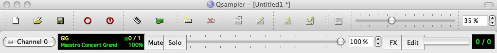
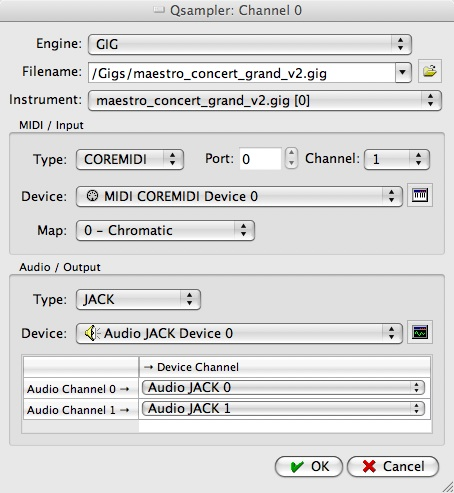

LinuxSampler-1.0.0 on Mac OS X HOWTO by Ebrahim Mayat and Grigor Iliev
September 20th, 2009
NOTE: This HOWTO is currently completely out-dated!
1. Introduction
The LinuxSampler development team is delighted to announce the release of LinuxSampler-1.0.0 for Mac OS X.
LinuxSampler is an open-source disc-streaming software sampler that enables the expressive emulation
of instruments by the means of MIDI-triggered rendering of large sample sets. While the modular design
of LinuxSampler allows for multi-engine and multi-format features, the present implementation of the Gig
engine already has the capability for producing virtual instruments with realistic emulations. VST (Linux, Windows)
and Audio Unit (OS X) plug-ins for digital audio workstations (DAWs) facilitate the use of this sampler within audio
and MIDI sequencer applications. With its LinuxSampler Control Protocol (LSCP), LinuxSampler can be controlled over
a computer network so that a cluster can be used as a gigantic sampler. Since this network protocol is ASCII-based,
frontends for it can be written in any programming language and for any operating system. LinuxSampler itself is a server
application that can be controlled by GUI frontends like the C++-based Qsampler and the Java-implemented Fantasia. The
present release can be deployed on Linux, OS X and Windows. The instructions for using the OS X binaries are outlined here.
2. Requirements
3. The LinuxSampler package
- Combined binaries of LinuxSampler and its derivatives for both Intel- and PowerPC-based Apple
machines can be obtained by downloading the "LinuxSampler-1.0.0-OS_X.universal.dmg" disk image
from the LinuxSampler
Download Page.
- After mounting and extracting the contents of the disk image on your computer's desktop,
open the "linuxsampler-1.0.0" volume. The following choices are available:
This disk image contains two sets of universal binaries. The first set designated simply LinuxSampler is linked to
Apple's proprietary CoreAudio driver while the second LinuxSampler(JACK) folder contains binaries linked to the
third-party JACK (Jack Audio Connection Kit) audio server framework. In addition there is also the LinuxSamplerAU.component
Audio Unit plug-in which can be used within OS X-deployed DAWs for loading up virtual instruments.
The LinuxSampler folder contains the triple-architecture (ppc/i386/x86_64) universal binaries of "linuxsampler" and the
"LinuxSamplerAU.component" DAW plug-in.
The LinuxSamplerAU.component plug-in should be dragged and dropped into the /Library/Audio/Plug-Ins/Components folder as
shown by the rightward arrow. In a similar way, place the LinuxSampler folder into the /Applications folder
3.1. Loading a Virtual Instrument in your DAW
- For a basic demonstration, we will load up the LinuxSamplerAU plug-in into GarageBand. First open the "Track Info" window:
Track / Show track Info. Then in the Track Info window select "LinuxSampler Unit" from the "Generator" tab.
A gig file can then be loaded using the "qsampler" or "Fantasia" application. Click on the "Add channel" icon
in qsampler in order to load a gig file.

You are now ready to lay down your track...
(Note: JackOSX installation is NOT recommended in this setup since the Jack Audio Connection Kit hinders the initialization
of both qsampler and Fantasia.)
You may also read the JSampler Manual to find out how to configure LinuxSampler using Fantasia.
4. The LinuxSampler(JACK) package
This archive contains dual-architecture ppc/i386 binaries of linuxsampler and "qsampler" which function together with
JackOSX. This setup can be used for running various Jack-enabled applications simultaneously: a setup
that is particularly useful for live situations.
After opening the linuxsampler-1.0.0 volume, place the LinuxSampler(JACK) folder into the /Applications directory as
indicated by the leftward arrow at the bottom.
4.1 Setting up MIDI Input
In qsampler click on the "Device configuration" icon and then on Create.
If you need multiple MIDI input devices, set the "Number of ports" to 2, 3, ... before creating the MIDI device. The multiple ports will be accessible from other MIDI applications as "Linuxsampler_in_0", "Linuxsampler_in_1", etc.
(You should be able to create an arbitrary number of MIDI input devices by repeating "Create", but this feature does not work well yet.)
4.2 Setting up Audio Output
Start the Jack audio server using JackPilot.app. The qsampler application can then be launched by double-clicking on its icon.
Load a gig file into qsampler by clicking on Add Channel. A dialog will appear. Select the GIG file you want to load,
the instrument within the GIG file, the Audio device, the MIDI device and the MIDI port and channel.

Connect audio ports:
In the "Connections Manager" pane of JackPilot: linuxsampler --> Built-in audio: in1 & in2
or
In the "Connections" window of qjackctl: LinuxSampler --> system
Intel Mac Note: to use built-in audio in Jack, you need to create an "aggregated device" by using "Audio MIDI Setup". Please look up Jack manual for details.
4.3 Configuring MIDI Input/Output
Start MIDI Patchbay.app and connect your MIDI Input instance (probably your MIDI interface or USB-enabled keyboard) to the "LinuxSampler_in_0"
MIDI Output
4.4 Loading Additional Samples
After loading additional gig files, the user can then save *.lscp files for convenient future use.
In this way, the user can automatically set up audio and midi devices and
load samples into the channel strips when recalling a setup.
5. Detailed Documentation
You can find more detailed documentation about our software on our official
LinuxSampler documentation site.
6. Bugs, Problems and Feature Requests
Our Forum is a good place to ask for help:
https://bb.linuxsampler.org
We have a dedicated forum section for
newbies and support.
Please report any bugs using our bug tracking system:
http://bugs.linuxsampler.org/
Some bugs and problems we discovered so far:
- The current LinuxSampler for Mac OS X binary distribution does not ship with gigedit yet.
While gigedit works using gtk with X11.app, the large number of dependencies
on external libraries makes it very arduous to prepare a universal binary.
- Overloading the sampler (CPU overload or disk overload)
produces noise.
-
QSampler crashes when one tries to create a second port of jack.
An error dialog saying that "the device was not created" appears. After the dialog is dismissed qsampler crashes.
-
Sometimes qsampler fails to quit gracefully; this calls for "Force Quit". After force quitting, the
linuxsampler subprocess is still running. In this case, simply invoke "killall linuxsampler" from Terminal.app to terminate
linuxsampler.
7. Credits
LinuxSampler was conceived and created by the collective effort of
a dedicated group of individuals
8. Contact
If you have questions or want to help us to improve the sampler,
subscribe to the
LinuxSampler Developer's mailing list.
That's it, enjoy!